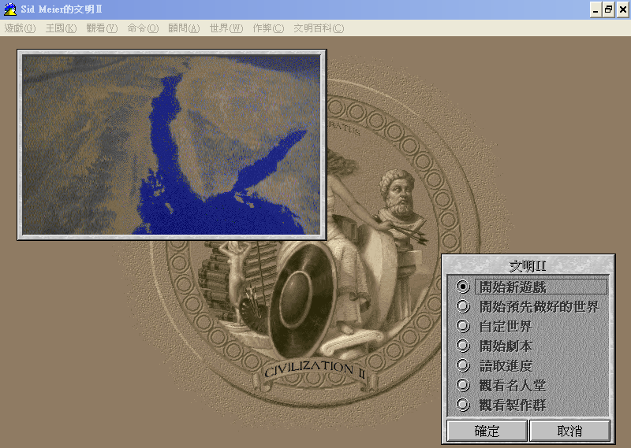
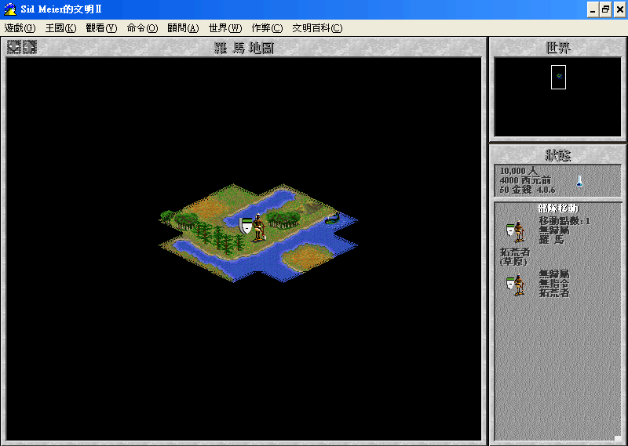

名稱：文明帝國2：治國大典 (Sid Meier's Civilization 2，中文／英文版)
簡介：MicroProse 1996年出品的城鎮建造經營模擬遊戲，同年推出「文明衝突（Conflicts
in Civilization）」資料片，1997年推出「奇幻世界（Fantastic Worlds）」資料片，
台灣由第三波代理進口，但並未中文化。1998年重新發行整合資料片的「多人黃金版
（Multiplayer Gold Edition）」 [待補]。


保護：無（放入光碟才有背景音樂和動畫），多人黃金版為光碟
備註：主程式光碟有1996/2/19的1.0版和1996/10/08的2.42a版等兩種。
檔案：civ2_patch111.rar = 主程式1.11英文更新檔（1996/04/25）
MGE_Patch_13.rar = 多人黃金版1.3英文更新檔
civ2_tw.rar = 繁中化檔案(含台灣劇本)